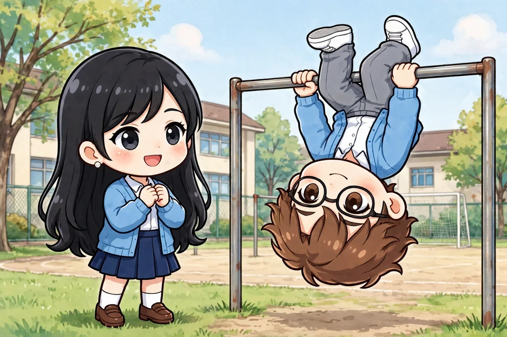

鉄棒チャレンジ
体育・器械運動（鉄棒）｜自分に合った
技
わざ
を選んで、お手本動画でポイントをつかもう
🔊 音 ON
🏠 トップ

鉄棒の技を、自分の力に合わせて選べる教材です。技のポイントを知って、公式のお手本動画を見て、安全に練習しましょう。
⚠ 安全のやくそく（かならず守ろう）
鉄棒がぐらつかないか、場所が安全か確かめる
鉄棒の下にはマットをしく
自分の背に合った高さの鉄棒を使う
一人ずつ順番に行う。待つ場所を守る
逆さの姿勢では、手を絶対に離さない
難しい技は、先生や大人の見ているところで、補助をしてもらって行う
れんしゅうの入り口
学習の記録
できた技：0 / 13
まだ記録がありません。技のページで「できた！」を押してみよう。
資料室（公式の資料・動画）
スポーツ庁「小学校体育の動画資料」
学年別の資料（PDF）から、技ごとの動画が見られます
低学年「器械・器具を使っての運動遊び」（PDF）
スポーツ庁｜鉄棒を使った運動遊びが載っています
中学年「器械運動」（PDF）
スポーツ庁｜鉄棒運動の技と動画
高学年「器械運動」（PDF）
スポーツ庁｜鉄棒運動の技と動画
滋賀県教育委員会「鉄棒を使った運動遊び」
技ごとの資料（PDF）がそろっています
スポーツ庁「小学校体育（運動領域）指導の手引」
先生向けの指導資料です
← トップへもどる
← 技の一覧へもどる
← 技を組み合わせよう にもどる
← 連続わざづくり にもどる
×